Working with Parent/Child Courses¶
When a course is created by cloning or using a share code, the course (child) is tied to the original (parent) course and any updates to an assignment in the parent course may also be updated. Details of the parent course for any child assignments can be seen from the version history button and individual child assignments as well as the entire course can be disconnected if required.
Update & pull updates¶
After an update in the parent course has been published, from Edit Assignments area, a Pull icon will appear next to assignments that have changed. Follow these steps to pull the updates.
In the Dashboard, select the course to open it and click on the Edit Assignments tab. The assignments that have changed show a Pull icon.
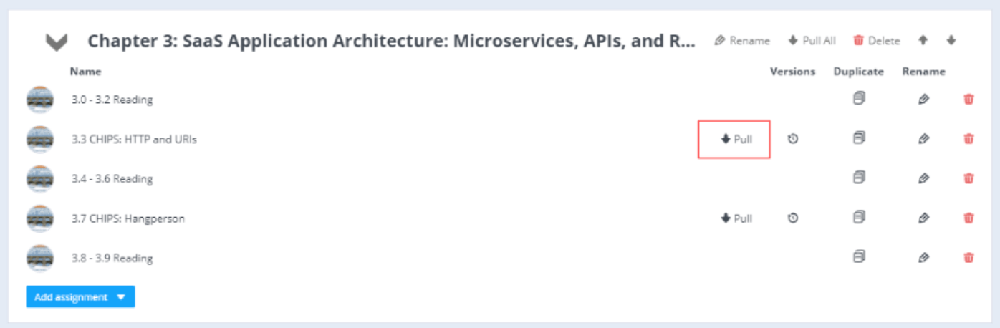
Click the Pull icon to view the details of the update.
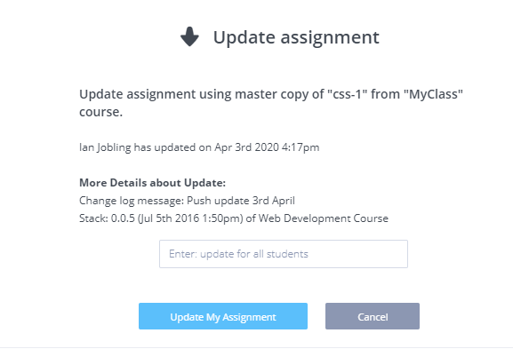
Click Update to pull the updates into the cloned (child) course.
Note
You can also click Pull All to pull all available updates for the module but you cannot view the details.
Note
Pulling updates from the parent course overwrites changes made in the child course.
Update & pull updates - with notification sent to child courses¶
Some people prefer to send notifications to alert child courses of updates. After an update in the parent course has been published, you can send a notification that displays a banner in the child course(s) informing all instructors that there are available updates.
To send notifications, follow these steps:
In the Dashboard, select the course to open it and then click the Course Details tab.
Click the Send New Notification button in the Course Management section.
In the Notification Message text box, enter the message to instructors that explains the changes that have been made to the parent course and are now available in the child course.
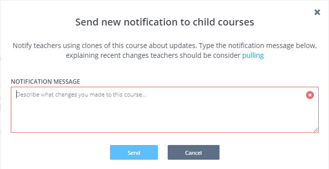
The message can include details of all the changes made in each assignment or just be a summary. If a summary is included, instructors can pull the assignments and review the information in the publish assignment changelog.
Note
To view a history of all notifications sent for published updates in the parent course, click the View Sent Notification button.
After a notification has been sent, a Download icon is displayed in the upper right corner of the course.
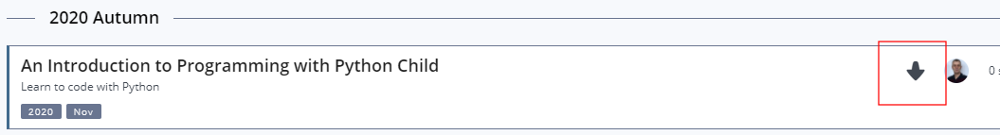
If you open the course, a banner is displayed indicating that the course has been updated.
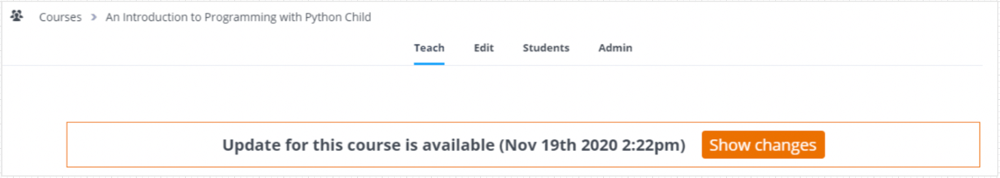
Click Show Changes to view the updates, including the tagged parts of the assignment that has updates.
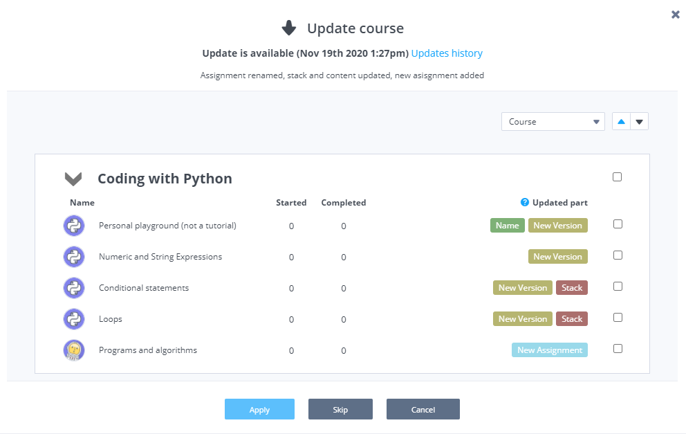
To understand the tags, click the ? to view a description.
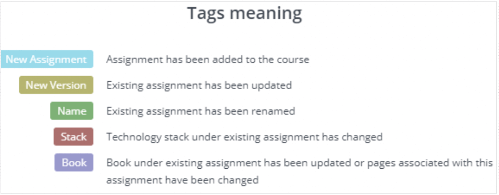
To view the notification message that was send with the update, click Update History.
Check the check box next to the assignments you want to update and then click Apply.
On the confirmation dialog, confirm that you want to update the assignments.
Note
Pulling updates from the parent course overwrites changes made in the child course.
Add new assignments from parent to child courses¶
When a new assignment has been added in the parent course, it will not automatically be added to child courses. Rather, child courses will need to add it manually to allow future updates to be pulled. Follow these steps to add an assignment from the parent course to the child course:
In the Dashboard, select the child course to open it and go to the Edit Assignments tab.
Select the module and click Add assignment.
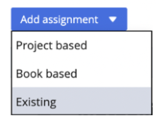
On the Create Assignment dialog, click Existing
Select the parent course, module and assignment(s) to be added to the child course. The assignment in the child course is automatically published.
Revert to earlier version¶
You can revert back to earlier published versions of your courses. However, reverting automatically publishes the course and it’s available to your students.
In the Dashboard, select the course to open it and go to the Edit Assignments tab.
On the Assignments page, click the Versions button.
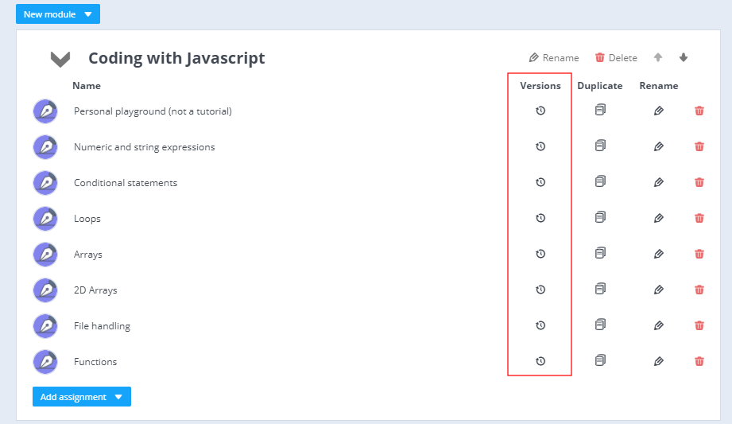
View the list of all previous versions and click Revert for the version to which you want to revert.
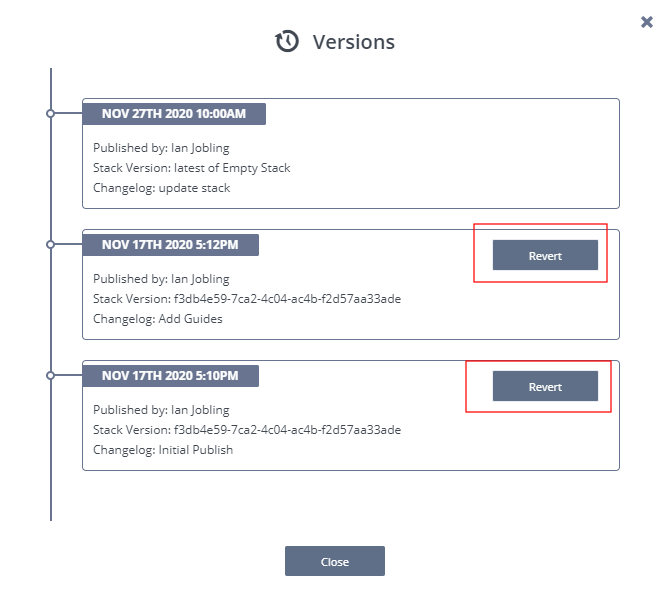
When other instructors open the assignment (in Edit mode), they can click Latest Published Version to update their working copy to the currently published version.
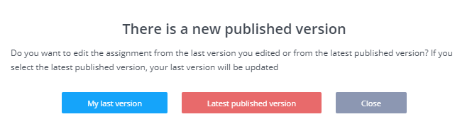
Parent/Child relationship information¶
Details of the parent course associated with child assignments can be seen from the Versions button.
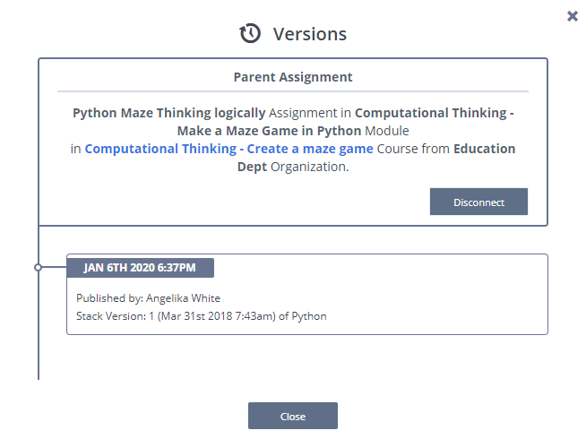
Disconnecting assignments or an entire course from a parent course¶
Individual assignments¶
Assignments in child courses can be disconnected from the parent assignment so any future updates released for the parent assignment will not be available to update.
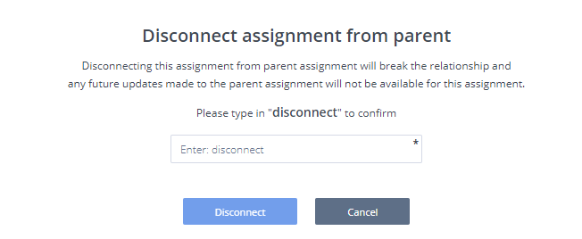
Entire Course¶
The entire course can be disconnected from the parent course so any future updates released for the parent course will not be available to update.
Select the course, and then click the Course Details tab and click Disconnect button in the Course Management section.
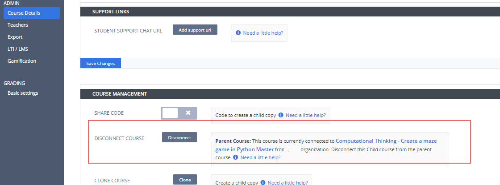
Send announcements¶
Announcements can be sent to instructors that displays a similar banner as above in the child course informing all instructors of an announcement. These can be used to provide other information to instructors.
To send an announcement, follow these steps:
In the Dashboard, select the course to open it and then click the Course Details tab.
Click the Send New Announcement button in the Course Management section.
In the Notification Message text box, enter the message to instructors you wish to send.
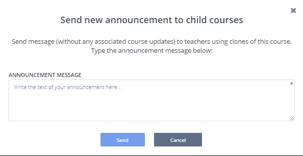
Note
To view a history of all announcements sent in the parent course, click the View Sent Announcements link.
When an instructor opens the course, a banner is displayed indicating that there is an announcement for the course.
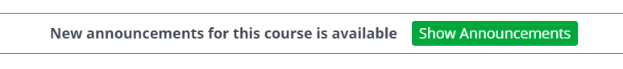